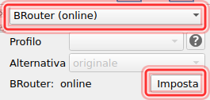
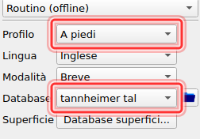

Configurare il routing#
Questa pagina mostra come configurare un router, in modo che QMapShack possa disegnare per te una traccia lungo sentieri e strade.
Cosa fa un router#
Un router calcola il percorso lungo sentieri e strade da un punto al successivo. Quando disegni una traccia, fai clic solo sui punti per cui deve passare la traccia, e il router aggiunge il percorso tra di essi.
Per aggiungere il percorso mentre fai clic, il router deve lavorare al volo: risponde subito, con dati di routing presenti sul tuo computer. Un router che interroga un server su internet non può farlo. Invierebbe una richiesta a ogni clic, e per evitare abusi i server bloccano i client che inviano troppe richieste in poco tempo.
Scegliere un router#
QMapShack può usare due router, Routino e BRouter. Selezionane uno nell’elenco in cima al riquadro Routing.
Routino (offline) calcola i percorsi con dati sul tuo computer, che crei dai dati OpenStreetMap con Strumenti → Crea un database Routino. I passaggi di questa pagina usano Routino.
BRouter è più facile da configurare. Come BRouter (online) interroga il server BRouter-Web, quindi non può calcolare al volo. Installato sul tuo computer, compare come BRouter (offline) e allora calcola al volo.
Installare BRouter#

BRouter richiede Java. Installa prima Java: senza Java, la procedura guidata di configurazione non prosegue.
Una procedura guidata installa BRouter per te. Seleziona BRouter (online) nell’elenco e fai clic su Imposta. Nella procedura guidata Impostazioni BRouter, scegli Installazione locale e segui le sue pagine.
La procedura guidata scarica BRouter e i dati di routing delle zone che selezioni sulla sua mappa. Li salva nella
cartella BRouter della tua cartella home.
Quando la procedura guidata ha finito, l’elenco mostra BRouter (offline).
Configurare Routino#
Routino calcola i percorsi con un database che QMapShack crea a partire da dati OpenStreetMap. Ti serve un estratto
della tua zona come file .pbf, per esempio da Geofabrik. Routino non può calcolare un percorso da un
database a un altro, quindi l’estratto deve coprire tutte le zone che un percorso attraversa. Puoi combinare più file
.pbf in un unico database.
Su Linux, installa prima il pacchetto Routino della tua distribuzione: lo strumento ha bisogno del suo programma
planetsplitter.
Seleziona Routino (offline) nell’elenco in cima al riquadro Routing.
Fai clic su Strumenti → Crea un database Routino.
Fai clic sul pulsante della cartella accanto a Seleziona i file di origine e seleziona i file
.pbf.Seleziona dove va il database nell’elenco Percorso di destinazione. L’elenco offre le cartelle registrate per Routino, tra cui la cartella
Routinodella tua cartella home. Il pulsante della cartella a sinistra di Percorso di destinazione aggiunge altre cartelle.Inserisci un nome per il database nel campo Prefisso file.
Fai clic su Avvia. La creazione richiede un po” di tempo. Quando lo strumento indica !!! fatto !!!, il database compare in Database nel riquadro Routing.

Seleziona il database in Database. Seleziona come ti sposti in Profilo, per esempio A piedi o Bicicletta.
Un database creato altrove è un insieme di quattro file: <nome>-nodes.mem, <nome>-segments.mem, <nome>-ways.mem e
<nome>-relations.mem. Copiali direttamente nella cartella Routino, non in una sottocartella. Dopo qualche secondo il
database compare in Database. Ha il nome dei suoi file, con spazi al posto dei trattini bassi: i file
tannheimer_tal-*.mem compaiono come tannheimer tal.